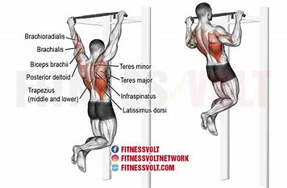
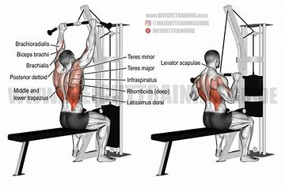
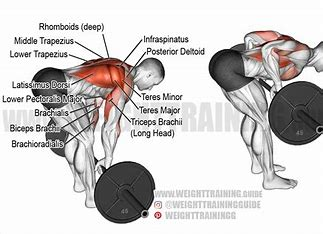
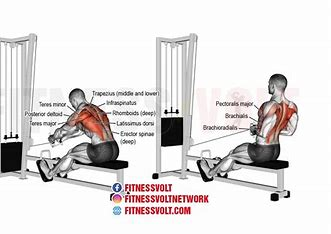
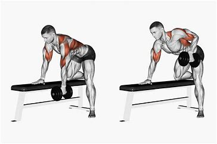
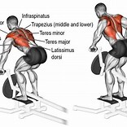

Lat Workouts
1. Pull-Ups

Grab the pull-up bar with your palms down (shoulder-width grip).
Hang all the way down.
Pull yourself up until your chin passes the bar.
Lower yourself all the way down and repeat.
2. Lat Pulldowns

Sit down at a lat pulldown machine and grab the bar with a wide grip.
Pull the bar down to your chest.
Slowly return the bar to the starting position.
Repeat for the desired number of reps.
3. Bent Over Rows

Hold a barbell with a grip slightly wider than shoulder-width.
Bend at your hips and knees and lower your torso until it's almost parallel to the floor.
Pull the barbell to your upper abs.
Lower the bar back to the starting position and repeat.
4. Dumbbell Pullover
Lie on a bench with your upper back and head supported.
Hold a dumbbell with both hands above your chest.
Lower the dumbbell in an arc behind your head.
Return to the starting position and repeat.
5. Seated Cable Rows

Sit at a cable row machine and grab the handles with both hands.
Pull the handles towards your torso, squeezing your shoulder blades together.
Slowly return to the starting position.
Repeat for the desired number of reps.
6. Single-Arm Dumbbell Row

Place one knee and one hand on a bench for support.
Hold a dumbbell in the opposite hand.
Pull the dumbbell towards your hip.
Lower the dumbbell back to the starting position and repeat.
7. T-Bar Row

Stand over the T-bar row machine and grab the handles.
Bend at your hips and knees and lower your torso until it's almost parallel to the floor.
Pull the handles towards your torso.
Slowly return to the starting position and repeat.
Go Back